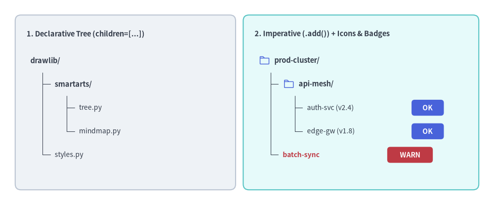
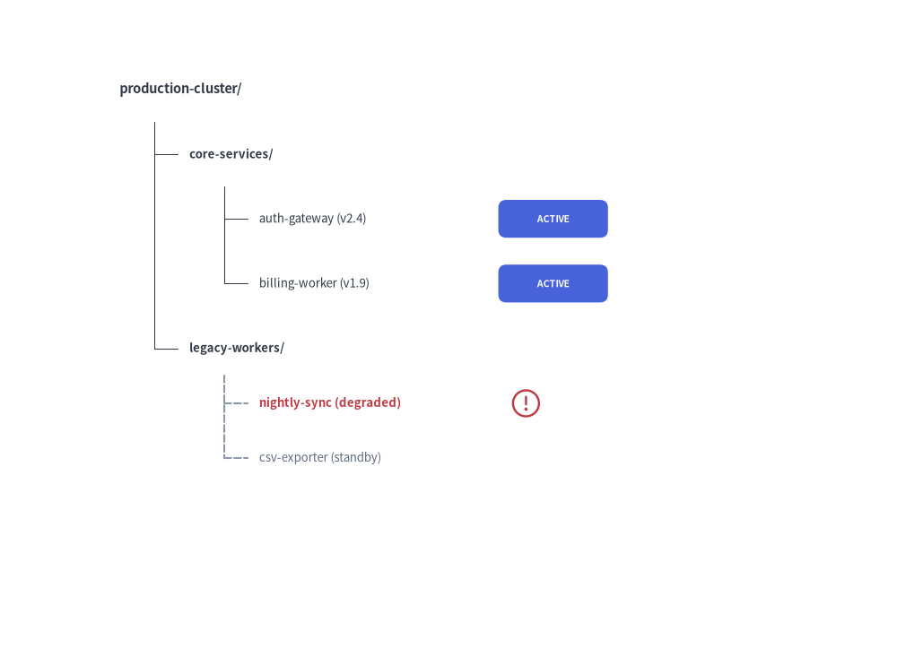

Tree Component
The TreeNode component renders hierarchical tree structures, such as codebase directory trees, organizational hierarchy charts, and taxonomy categorizations.
It automates vertical branch alignment, indentation levels, and tree connector lines.

Source Code
from drawlib.canvas import save, setup
from drawlib.icons import phosphor
from drawlib.shapes import rectangle
from drawlib.smartarts import TreeNode
from drawlib.styles import Styles
from drawlib.text import text
setup(width=130, height=54)
# 1. Left Card: Declarative Nested Hierarchy (children=[...])
rectangle((33, 27), width=58, height=46, style=Styles.Neutral.patch(shape_r=1.5))
text((7, 45.0), "1. Declarative Tree (children=[...])", style=Styles.DarkBold.patch(text_size=10.5, halign="left"))
decl_root = TreeNode(
"drawlib/",
text_style=Styles.DarkBold.patch(text_size=10.5),
line_style=Styles.DarkThin,
line_horizontal_margin=3.2,
line_horizontal_length=3.0,
line_vertical_margin=6.2,
children=[
TreeNode(
"smartarts/",
children=[
TreeNode("tree.py", text_style=Styles.Dark.patch(text_size=10.0)),
TreeNode("mindmap.py", text_style=Styles.Dark.patch(text_size=10.0)),
],
),
TreeNode("styles.py", text_style=Styles.Dark.patch(text_size=10.0)),
],
)
decl_root.draw(xy=(8, 38.0))
# 2. Right Card: Imperative (.add()) with Vector Icons & Trailing Badges
rectangle((95, 27), width=62, height=46, style=Styles.SecondaryNeutral.patch(shape_r=1.5))
text((67, 45.0), "2. Imperative (.add()) + Icons & Badges", style=Styles.DarkBold.patch(text_size=10.5, halign="left"))
TreeNode.register_drawing_item(
name="hero_dir",
location="before",
padding_width=4.2,
function=phosphor.folder,
style=Styles.PrimaryFlat,
args={"width": 3.0},
)
TreeNode.register_drawing_item(
name="hero_ok",
location="after",
padding_width=27.5,
function=rectangle,
style=Styles.PrimaryFlat.patch(shape_r=0.8),
args={"width": 8.5, "height": 4.2, "text": "OK", "text_style": Styles.WhiteBold.patch(text_size=10.0)},
)
TreeNode.register_drawing_item(
name="hero_warn",
location="after",
padding_width=27.5,
function=rectangle,
style=Styles.DangerFlat.patch(shape_r=0.8),
args={"width": 12.0, "height": 4.2, "text": "WARN", "text_style": Styles.WhiteBold.patch(text_size=10.0)},
)
imp_root = TreeNode(
"prod-cluster/",
text_style=Styles.DarkBold.patch(text_size=10.5),
line_style=Styles.DarkThin,
line_horizontal_margin=3.2,
line_horizontal_length=3.0,
line_vertical_margin=6.2,
).set_drawing_item("hero_dir")
api_group = imp_root.add("api-mesh/").set_drawing_item("hero_dir")
api_group.add("auth-svc (v2.4)", text_style=Styles.Dark.patch(text_size=10.0)).set_drawing_item("hero_ok")
api_group.add("edge-gw (v1.8)", text_style=Styles.Dark.patch(text_size=10.0)).set_drawing_item("hero_ok")
imp_root.add("batch-sync", text_style=Styles.DangerBold.patch(text_size=10.0), line_style=Styles.MutedDashed).set_drawing_item("hero_warn")
imp_root.draw(xy=(68, 38.0))
save()
1. Quick Example: Project Directory Hierarchy
from drawlib.canvas import setup
from drawlib.smartarts import TreeNode
from drawlib.icons import phosphor
from drawlib.styles import Styles
setup(width=115, height=44)
# Register custom icons for folders and files
TreeNode.register_drawing_item(
name="folder", location="before", padding_width=4.5, function=phosphor.folder,
style=Styles.PrimaryFlat, args={"width": 3.2}
)
TreeNode.register_drawing_item(
name="file", location="before", padding_width=4.5, function=phosphor.file_text,
style=Styles.Dark, args={"width": 3.2}
)
root = TreeNode(
"src/",
text_style=Styles.DarkBold.patch(text_size=11.0),
line_style=Styles.DarkThin,
line_horizontal_margin=3.5,
line_horizontal_length=3.2,
line_vertical_margin=6.8,
children=[
TreeNode("components/", children=[
TreeNode("Button.py", text_style=Styles.Dark.patch(text_size=10.5)).set_drawing_item("file"),
TreeNode("Modal.py", text_style=Styles.Dark.patch(text_size=10.5)).set_drawing_item("file"),
]).set_drawing_item("folder"),
TreeNode("utils.py", text_style=Styles.Dark.patch(text_size=10.5)).set_drawing_item("file"),
]
).set_drawing_item("folder")
root.draw(xy=(8, 37))

2. Imperative Construction (.add()), Cascading Overrides & "after" Status Badges
Instead of nesting children=[...] inside the constructor, you can build trees imperatively using parent.add(text, ...) -> TreeNode. Any style or margin parameter specified on an intermediate node automatically cascades down to its subtree unless overridden again. You can also register status badges or icons with location="after" (where padding_width specifies the horizontal offset from the node's left x coordinate to the badge).
from drawlib.canvas import save, setup
from drawlib.icons import phosphor
from drawlib.shapes import rectangle
from drawlib.smartarts import TreeNode
from drawlib.styles import Styles
setup(width=115, height=58)
# Register trailing status badges (location="after" places the item at x + padding_width)
TreeNode.register_drawing_item(
name="badge_live",
location="after",
padding_width=32.0,
function=rectangle,
style=Styles.PrimaryFlat.patch(shape_r=0.8),
args={"width": 13.5, "height": 4.5, "text": "ACTIVE", "text_style": Styles.WhiteBold.patch(text_size=10.0)},
)
TreeNode.register_drawing_item(
name="badge_warn",
location="after",
padding_width=33.5,
function=phosphor.warning_circle,
style=Styles.DangerFlat,
args={"width": 3.8},
)
root = TreeNode(
"production-cluster/",
text_style=Styles.DarkBold.patch(text_size=11.0),
line_style=Styles.DarkThin,
line_horizontal_margin=3.8,
line_horizontal_length=3.6,
line_vertical_margin=6.8,
)
# 1. Core Services Subtree (inherits root margins, overrides text_style)
core = root.add("core-services/", text_style=Styles.DarkBold.patch(text_size=10.5))
core.add("auth-gateway (v2.4)", text_style=Styles.Dark.patch(text_size=10.0)).set_drawing_item("badge_live")
core.add("billing-worker (v1.9)", text_style=Styles.Dark.patch(text_size=10.0)).set_drawing_item("badge_live")
# 2. Legacy Subtree (overrides line_style and tighter vertical spacing for all its children)
legacy = root.add(
"legacy-workers/",
text_style=Styles.DarkBold.patch(text_size=10.5),
line_style=Styles.MutedDashed,
line_vertical_margin=6.2,
)
batch = legacy.add("nightly-sync (degraded)", text_style=Styles.DangerBold.patch(text_size=10.0))
batch.set_drawing_item("badge_warn")
legacy.add("csv-exporter (standby)", text_style=Styles.Muted.patch(text_size=10.0))
root.draw(xy=(8, 51))
save()

3. Geometry, Lifecycle & Coordinate Mechanics
- Top-Left Anchor
(x, y): The coordinate passed toroot.draw(xy=..., scale=1.0)represents the left edge and vertical center of the root node label. Passingscaleproportionally scales indentation, vertical spacing, icons, and text sizes relative toxy. - Downward & Rightward Flow: Child nodes step downward (
child_y = current_y - line_vertical_margin) and indent rightward (child_x = parent_x + 2 * line_horizontal_margin). - Layout-Preserving Visibility (
show: bool = True):- Both
TreeNode(text, ..., show=True)andnode.add(text, ..., show=True)control node visibility. - Setting
node.show = Falsehides the node, its incoming connector tick, and its descendants while preserving the exact vertical Y-coordinates of all subsequent sibling nodes.
- Both
- Root Node Style & Margin Requirements:
The rootTreeNodemust define all five baseline style and spacing attributes (text_style,line_style,line_horizontal_margin,line_horizontal_length, andline_vertical_margin). Descendant nodes inherit these settings automatically via cascading unless overridden on a child node.
4. API Reference
Constructor (TreeNode)
TreeNode(
text: str,
*,
text_style: Style | None = None,
line_style: Style | None = None,
line_horizontal_margin: float | None = None,
line_horizontal_length: float | None = None,
line_vertical_margin: float | None = None,
children: list[TreeNode] | None = None,
show: bool = True,
)
| Parameter | Type | Default | Description |
|---|---|---|---|
text |
str |
(Required) | Label text displayed for this tree node. |
text_style |
Style | None |
None |
Text style for the node label (required on root; inherited by children if None). |
line_style |
Style | None |
None |
Line style for branch connectors (required on root; inherited by children if None). |
line_horizontal_margin |
float | None |
None |
Horizontal offset from parent x to vertical connector line (> 0, required on root). |
line_horizontal_length |
float | None |
None |
Base length parameter for the horizontal connector tick (> 0, required on root). |
line_vertical_margin |
float | None |
None |
Vertical step distance between consecutive rows (> 0, required on root). |
children |
list[TreeNode] | None |
None |
Initial list of child TreeNode instances. |
show |
bool |
True |
Whether to render this node and its connectors (preserves vertical row slots when False). |
Adding Child Nodes (.add())
node.add(
text: str,
*,
text_style: Style | None = None,
line_style: Style | None = None,
line_horizontal_margin: float | None = None,
line_horizontal_length: float | None = None,
line_vertical_margin: float | None = None,
show: bool = True,
) -> TreeNode
Creates a new child TreeNode with label text: str, appends it to node.children, and returns the newly created child TreeNode instance.
Custom Icons & Badges (register_drawing_item & set_drawing_item)
TreeNode.register_drawing_item(
name: str,
location: Literal["before", "after"],
padding_width: float,
function: Callable,
style: Style,
args: dict,
) -> None
| Parameter | Type | Description |
|---|---|---|
name |
str |
Unique identifier used when calling node.set_drawing_item(name). |
location |
Literal["before", "after"] |
"before" draws the icon at xy and shifts the text right by padding_width; "after" draws the text at xy and places the icon/badge at x + padding_width. |
padding_width |
float |
Horizontal spacing offset (> 0). |
function |
Callable |
Any Drawlib shape or icon callable accepting xy and style (e.g. phosphor.folder, rectangle). |
style |
Style |
Style passed to function (patched with halign="left", valign="center"). |
args |
dict |
Additional keyword arguments passed to function (e.g. {"width": 3.0}). |
node.set_drawing_item(name: str) -> TreeNode: Links a registered drawing item tonodeand returnsselffor method chaining.
Drawing & Mutable Properties
node.draw(xy: tuple[float, float], scale: float = 1.0) -> None: Renders the tree rooted at top-leftxywith optional proportional scalingscale.- Mutable Node Properties:
node.text: str— Get or set the node label string.node.text_style: Style | None— Get or set the node text style.node.line_style: Style | None— Get or set the node connector line style.node.children -> list[TreeNode]— Access the list of childTreeNodeinstances.node.show: bool— Toggle layout-preserving visibility before or betweendraw()calls.